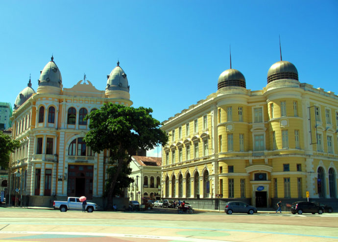

Recife
Recife, a capital de Pernambuco, é uma cidade cheia de vida e cultura. Conhecida como a "Veneza Brasileira" devido aos seus rios e pontes, Recife oferece uma mistura única de história, praias deslumbrantes e uma cena cultural vibrante. É um destino imperdível para quem visita o Nordeste.
Ponte Maurício de Nassau - Recife
Praia de Boa Viagem
A Praia de Boa Viagem é a praia mais famosa de Recife. Suas águas mornas e piscinas naturais a tornam perfeita para um mergulho. A orla também é repleta de bares e restaurantes que servem pratos deliciosos da culinária pernambucana.
Recife Antigo
O Recife Antigo é o coração histórico da cidade. Explore as ruas de paralelepípedo, visite o Marco Zero, e conheça a arquitetura colonial preservada. À noite, a região ganha vida com bares, restaurantes e apresentações culturais.
